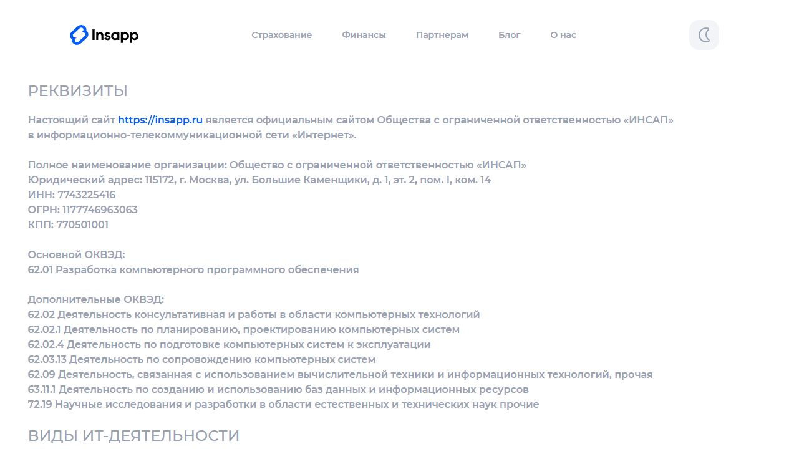
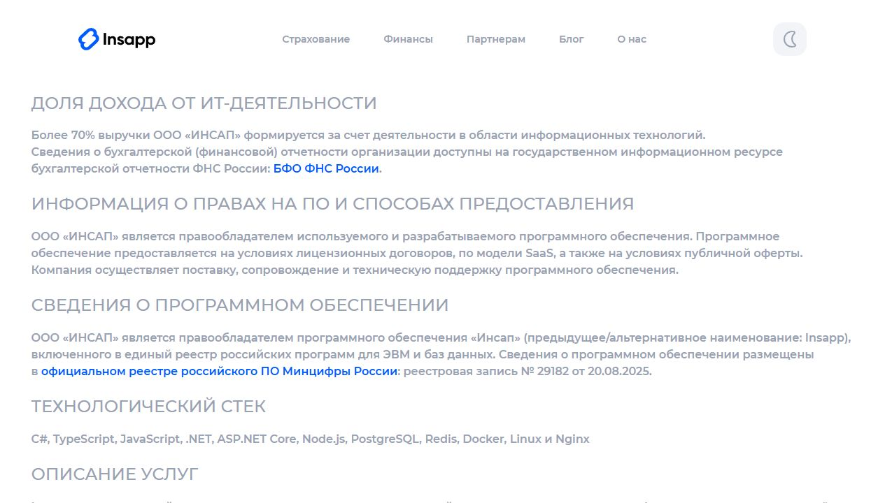
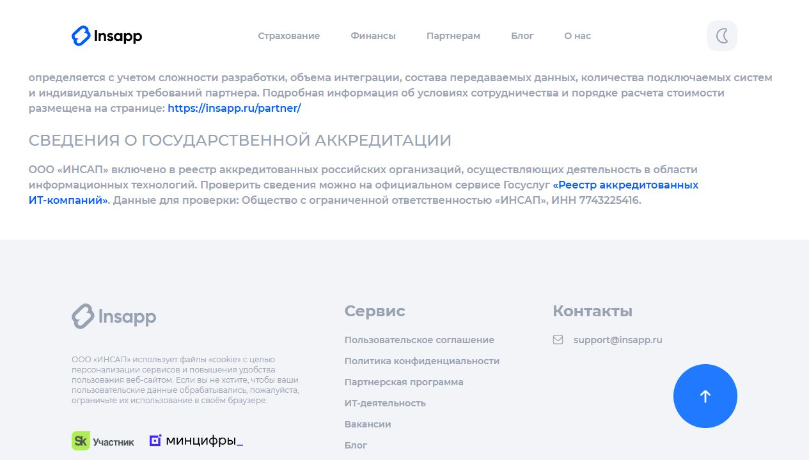

Заменить: «Реквизиты» → «Реквизиты и контакты»Верх страницы
Добавить новый блок «О сайте» выше реквизитов, убрать этот абзац из реквизитов и добавить email.
insapp.ru/it-deyatelnost/ в соответствие с приведённой ниже структурой. Все блоки расположены в том порядке, в котором они должны идти на странице сверху вниз. Каждый блок помечен меткой: оставить как есть, заменить текст или новый блок.

Заменить: «Реквизиты» → «Реквизиты и контакты»Добавить новый блок «О сайте» выше реквизитов, убрать этот абзац из реквизитов и добавить email.

Заменить: «Описание услуг»Переименовать блок в «Функциональные возможности ПО» и заменить текст на техническое описание ПО.

Добавить: отдельный блок «Стоимость»Стоимость должна быть на этой же странице, без перехода на /partner/, затем оставить блок аккредитации.
Настоящий сайт https://insapp.ru является официальным сайтом Общества с ограниченной ответственностью «ИНСАП» в информационно-телекоммуникационной сети «Интернет».
Полное наименование организации: Общество с ограниченной ответственностью «ИНСАП»
Юридический адрес: 115172, г. Москва, ул. Большие Каменщики, д. 1, эт. 2, пом. I, ком. 14
ИНН: 7743225416
ОГРН: 1177746963063
КПП: 770501001
Электронная почта: support@insapp.ru
62.01 Разработка компьютерного программного обеспечения
62.02 Деятельность консультативная и работы в области компьютерных технологий
62.02.1 Деятельность по планированию, проектированию компьютерных систем
62.02.4 Деятельность по подготовке компьютерных систем к эксплуатации
62.03.13 Деятельность по сопровождению компьютерных систем
62.09 Деятельность, связанная с использованием вычислительной техники и информационных технологий, прочая
63.11.1 Деятельность по созданию и использованию баз данных и информационных ресурсов
72.19 Научные исследования и разработки в области естественных и технических наук прочие
1. Переименован блок: «Реквизиты» → «Реквизиты и контакты» (по формулировке приказа Минцифры №511).
2. Убран первый абзац про принадлежность сайта - вынесен в новый блок «О сайте» наверху страницы.
3. Добавлена строка «Электронная почта». Уточнить корректность адреса перед публикацией.
1.01 Проектирование, разработка, адаптация, модификация, внедрение, сопровождение, тестирование, техническая поддержка и эксплуатация программ для ЭВМ, баз данных и пользовательских интерфейсов.
2.01 Реализация собственных программ для ЭВМ и баз данных, включая предоставление прав использования и удалённого доступа к программному обеспечению посредством сети Интернет.
Более 70% выручки ООО «ИНСАП» формируется за счёт деятельности в области информационных технологий.
Сведения о бухгалтерской (финансовой) отчётности организации доступны на государственном информационном ресурсе бухгалтерской отчётности ФНС России: БФО ФНС России.
ООО «ИНСАП» является правообладателем используемого и разрабатываемого программного обеспечения. Программное обеспечение предоставляется на условиях лицензионных договоров, по модели «программное обеспечение как услуга» (SaaS), подключение - через автоматизированный программный интерфейс (REST API) или встраиваемый программный модуль.
ООО «ИНСАП» является правообладателем программного обеспечения «Инсап» (предыдущее/альтернативное наименование: Insapp), включённого в единый реестр российских программ для ЭВМ и баз данных. Сведения о программном обеспечении размещены в официальном реестре российского ПО Минцифры России: реестровая запись № 29182 от 20.08.2025.
C#, TypeScript, JavaScript, .NET, ASP.NET Core, PostgreSQL, Valkey, Docker, Linux и Nginx
«Инсап» - программный комплекс для технической интеграции информационных систем страховых организаций (страховщиков по ОСАГО, КАСКО, ипотечному страхованию) и финансовых организаций (банков, микрофинансовых организаций) с информационными системами партнёрских платформ. Программный комплекс реализует единый протокол обмена структурированными данными между информационными системами сторон интеграции: программное преобразование запросов в индивидуальные форматы информационных систем-получателей, нормализация ответных сообщений к единой схеме, единый программный интерфейс обмена данными для партнёрской организации.
Партнёрами программного комплекса «Инсап» выступают банки, крупные цифровые экосистемы, а также другие цифровые платформы различных отраслей, использующие программный интерфейс «Инсап» для технической интеграции своих информационных систем с подключёнными страховыми и финансовыми организациями.
Стоимость лицензии на использование программного комплекса «Инсап» - от 50 000 рублей в месяц. Итоговая стоимость определяется по соглашению сторон с учётом объёма передаваемых данных, количества подключённых информационных систем и состава используемых модулей.
ООО «ИНСАП» включено в реестр аккредитованных российских организаций, осуществляющих деятельность в области информационных технологий. Проверить сведения можно на официальном сервисе Госуслуг «Реестр аккредитованных ИТ-компаний». Данные для проверки: Общество с ограниченной ответственностью «ИНСАП», ИНН 7743225416.
Node.js, заменить Redis на Valkey/partner/ на /it-deyatelnost/